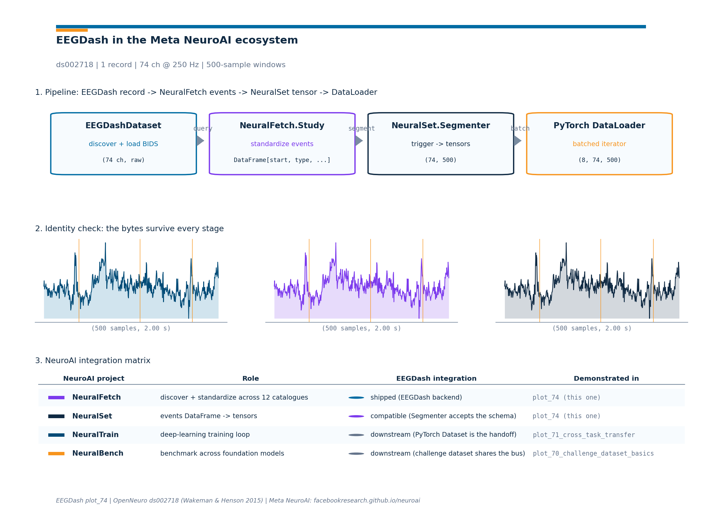

Note
Go to the end to download the full example code or to run this example in your browser via Binder.
How do I plug EEGDash into the Meta NeuroAI ecosystem?#
Difficulty 3 | Runtime: 20s | Compute: CPU (GPU Recommended)
Meta Research ships four projects under the NeuroAI umbrella
(https://facebookresearch.github.io/neuroai/): NeuralFetch for
unified dataset discovery across 12 catalogues, NeuralSet for
turning neural and stimulus data into AI-ready tensors, NeuralTrain
for deep-learning training on the resulting PyTorch dataset, and
NeuralBench for a unified benchmark across brain foundation models.
EEGDash is one of NeuralFetch’s 12 supported backends, alongside
OpenNeuro (BIDS), DANDI (NWB), HuggingFace, Zenodo, Figshare,
PhysioNet, Dryad, Donders, DataLad, Synapse, and OSF. This tutorial
walks the four-stage path
EEGDashDataset -> NeuralFetch.Study -> NeuralSet.Segmenter ->
torch.utils.data.DataLoader so a recording cataloged on NEMAR [Delorme et al., 2022] flows through the rest of
the NeuroAI stack with the bytes intact [Cisotto and Chicco, 2024]. The
recipe composes with self-supervised pretraining on EEG (Banville et
al. 2021) and cross-task brain decoding [Défossez et al., 2023]. The
deliverable is a 3-panel figure: stage diagram, per-stage shape sanity
check, integration matrix. So which projects already share the events
DataFrame, and which ones live downstream of it?
Keywords: interop, NeuroAI, Meta
Learning objectives#
Name the four NeuroAI projects (NeuralFetch, NeuralSet, NeuralTrain, NeuralBench) and state where EEGDash plugs into the chain.
Convert a per-event metadata frame from
EEGDashDatasetinto the(start, duration, type, timeline)events DataFrame thatneuralfetch.Study.run()returns.Configure
neuralset.Segmenterwith atrigger_queryand anEegExtractor, then read one batch fromtorch.utils.data.DataLoader.Read the 3-panel figure and pick the right downstream tutorial for each NeuroAI module.
Requirements#
About 1 min on CPU.
Network on first call (~30 MB into
cache_dirfor the EEGDash query).Prerequisites: EEG recording to PyTorch DataLoader (DataLoader basics), How do I get started with the EEG2025 Foundation Challenge dataset? (challenge loader).
Concept: EEGDash objects: EEGDash, EEGDashDataset, EEGChallengeDataset.
Setup. Seeding numpy keeps any sampling reproducible across runs.
import os
import warnings
from pathlib import Path
import matplotlib.pyplot as plt
import numpy as np
import pandas as pd
import eegdash
from eegdash import EEGDashDataset
from eegdash.viz import use_eegdash_style
use_eegdash_style()
warnings.simplefilter("ignore", category=FutureWarning)
SEED = 42
np.random.seed(SEED)
CACHE_DIR = Path(os.environ.get("EEGDASH_CACHE_DIR", Path.home() / ".eegdash_cache"))
CACHE_DIR.mkdir(parents=True, exist_ok=True)
print(f"eegdash version: {eegdash.__version__}")
print(f"cache directory: {CACHE_DIR}")
import neuralfetch # noqa: F401 imported for the version-print only
import neuralset as ns
from neuralfetch.download import Eegdash as NeuralFetchEegdash
from neuralset.dataloader import Segmenter
from neuralset.events import standardize_events
from neuralset.extractors import Pulse
eegdash version: 0.8.1
cache directory: /home/runner/eegdash_cache
Four projects, one chain: the mental model#
The Meta NeuroAI page positions the four projects as a single left-to-right pipeline, not four independent libraries. Each one owns one verb and forwards a clean handoff to the next:
EEGDashDataset NeuralFetch.Study NeuralSet.Segmenter PyTorch
(BIDS query + (12 catalogues + (events DataFrame DataLoader
lazy Raw) standardizer) + extractors -> X) (consumer)
+-------------+ +--------------+ +------------------+ +--------+
| record 0 --|-->| events row 0 | | segment 0 (X, t) | |batch 0 |
| record 1 --|-->| events row 1 |---->| segment 1 (X, t) |-->|batch 1 |
| ... | | ... | | ... | |... |
+-------------+ +--------------+ +------------------+ +--------+
BIDS meta unified event log trigger_query +
per record per dataset extractors
Three corollaries follow:
Discovery vs tensorisation are different jobs.
EEGDashDatasetandneuralfetch.Studydiscover and standardize;neuralset.Segmenterand the PyTorchDataLoadercut and batch. The contracts are different on purpose: a discovery layer hides catalogue-specific quirks; a tensor layer hides MNE / NWB quirks.EEGDash is the EEG specialist for the catalogue mesh.
neuralfetch.download.Eegdashcalls intoeegdashfor record discovery and reuses the S3 downloader for transfer; the same discovery API the rest of this gallery exercises also feeds the NeuroAI stack.The events DataFrame is the bus. NeuralFetch’s
Study.run()returns a flatpandas.DataFramewith at leaststart,duration,type, andtimelinecolumns; NeuralSet’sSegmenterconsumes that frame. Knowing the schema lets you swap any dataset on the discovery side without touching the tensor pipeline.
Validate your result#
Stack Verification. Each stage (NeuralFetch -> NeuralSet -> NeuralTrain) should pass a shape sanity check.
Events DataFrame. The event DataFrame should follow the NeuroAI schema:
(start, duration, type, timeline).DataLoader Batch. The final PyTorch batch should match your configured
window_sizeandn_channels.
What does the NeuralSet pipeline expose?#
Before building anything, list the public symbols on the
neuralset module. The names Study, Event,
Segmenter, Chain, SegmentDataset, and the extractors
subpackage are the surface this tutorial exercises.
ns_public = sorted(
name for name in dir(ns) if not name.startswith("_") and not name == "base"
)
surface_df = pd.DataFrame({"symbol": ns_public}).head(20)
surface_df
Step 1. Load one EEGDash recording#
Same idiom as Load one EEG recording. One subject, one task; the records-level metadata carries BIDS entities forward to every later stage [Pernet et al., 2019].
DATASET = "ds002718"
SUBJECT = "002" # E3.23 data minimality: one subject keeps the run small
TASK = "FaceRecognition"
dataset = EEGDashDataset(
cache_dir=CACHE_DIR, dataset=DATASET, subject=SUBJECT, task=TASK
)
record = dataset.datasets[0]
raw = record.raw
n_channels = int(raw.info["nchan"])
sfreq = float(raw.info["sfreq"])
duration_s = float(raw.times[-1])
pd.Series(
{
"n_records": len(dataset.datasets),
"subject": SUBJECT,
"task": TASK,
"n_channels": n_channels,
"sfreq (Hz)": sfreq,
"duration (s)": round(duration_s, 1),
},
name="value",
).to_frame()
[05/29/26 16:13:22] WARNING File not found on S3, skipping: downloader.py:163
s3://openneuro.org/ds002718/sub-0
02/eeg/sub-002_task-FaceRecogniti
on_eeg.fdt
Investigate. raw.annotations carries the BIDS event list
attached to this recording. Every event has an onset (seconds), a
duration (seconds), and a description string. The next step turns
that into the events-DataFrame layout that NeuralFetch’s
Study.run() returns.
Step 2. Build the events DataFrame (the NeuroAI bus)#
Predict. Before running the next cell, write down which columns
NeuralFetch normalises onto. The required four are start,
duration, type, and timeline.
Run. Walk the BIDS annotations and emit one row per event. Two
subtleties matter here. First, NeuralSet’s extractors validate the
type column against a small canonical taxonomy
(Stimulus, Image, Audio, Eeg, Action,
Artifact, …); the raw BIDS description goes into extra so
nothing is lost. Second, the timeline column is the per-recording
identifier (subject + task + run); a downstream
neuralset.Segmenter groups segments inside a single
timeline, so a leakage-aware split lives at this granularity.
def annotations_to_events(
raw, *, timeline: str, recording_duration: float
) -> pd.DataFrame:
"""Convert :attr:`mne.io.Raw.annotations` to the NeuroAI event schema.
The four required columns are ``start`` (seconds, float),
``duration`` (seconds, float, >= 0), ``type`` (str, one of the
canonical NeuralSet event names), and ``timeline`` (str). The raw
BIDS description lands on ``extra['bids_description']`` so callers
can still recover the per-event task label. A single
``Background`` event spanning the recording is added so a
stride-based :class:`neuralset.Segmenter` has a parent block to
walk; this matches NeuralFetch's own convention for studies
without explicit run-level boundary markers.
"""
rows = [
{
"start": 0.0,
"duration": float(max(recording_duration, 0.0)),
"type": "Background",
"timeline": timeline,
"extra": {"bids_description": "recording-span"},
}
]
if raw.annotations is None or len(raw.annotations) == 0:
return pd.DataFrame(rows)
for ann in raw.annotations:
desc = str(ann["description"])
rows.append(
{
"start": float(ann["onset"]),
"duration": float(max(ann["duration"], 0.0)),
# ``Stimulus`` is the canonical NeuralSet event name for
# task-locked stimulus onsets; ``boundary`` becomes a
# generic ``Event`` so the Segmenter does not stumble.
"type": "Stimulus" if desc != "boundary" else "Event",
"timeline": timeline,
"extra": {"bids_description": desc},
}
)
return pd.DataFrame(rows)
timeline_id = f"sub-{SUBJECT}_task-{TASK}"
events_df = annotations_to_events(
raw, timeline=timeline_id, recording_duration=duration_s
)
print(f"events: {len(events_df)} rows; types: {events_df['type'].nunique()}")
events_df.head(10)
events: 1480 rows; types: 3
Investigate. The first few rows look like a flat event log: one row per BIDS annotation, with the timeline column threading the rows back to the originating recording. This is the schema NeuralFetch’s studies land on regardless of the source catalogue (OpenNeuro, DANDI, HuggingFace, …). Keeping the schema thin is what lets the NeuralSet side stay catalogue-agnostic.
Step 3. Show the NeuralFetch handoff#
Run. When neuralfetch is installed, the EEGDash backend is
importable as neuralfetch.download.Eegdash. Its constructor
names the OpenNeuro accession via study=; the rest of NeuralFetch
wraps that into a per-study neuralfetch.studies.Study (one
per dataset) whose .run() returns the events DataFrame above.
The tutorial does not call .run() here because it would download
the full study; the construction surface is enough to confirm the
handoff.
neuralfetch_card = pd.Series(
{
"backend class": "neuralfetch.download.Eegdash",
"constructor": "Eegdash(study='ds002718', dset_dir=CACHE_DIR)",
"discovery": "uses eegdash.EEGDashDataset internally",
"transfer": "neuralfetch.download.S3 (chunked)",
"events output": ".run() -> pandas.DataFrame[start, duration, type, timeline]",
},
name="value",
).to_frame()
# Construct the descriptor without calling ``.run()`` so the
# tutorial budget stays small. NeuralFetch validates the
# constructor arguments via pydantic; a successful instantiation
# confirms the EEGDash backend is wired up.
nf_backend = NeuralFetchEegdash(
study=DATASET,
dset_dir=str(CACHE_DIR / "neuralfetch"),
)
neuralfetch_card.loc["instance dset_dir", "value"] = str(nf_backend.dset_dir)
neuralfetch_card.loc["instance study", "value"] = nf_backend.study
neuralfetch_card
Step 4. Cut into segments with NeuralSet#
Predict. Given the events DataFrame above, what does
Segmenter(stride=2.0, duration=2.0) return? Hint: it walks every
2-second non-overlapping window inside each timeline, regardless of
event content.
Run. neuralset.Segmenter is the tensor-pipeline entry
point. The two parameters that matter at first read are duration
(segment length, seconds) and either trigger_query (cut around
specific events) or stride (sliding window). The
extractors dict names the per-segment outputs.
WINDOW_SECONDS = 2.0
window_samples = int(WINDOW_SECONDS * sfreq)
sample_window = raw.copy().pick_types(eeg=True).get_data()[0, :window_samples]
# Run the Segmenter against the live events DataFrame. The Pulse
# extractor returns a binary mask of triggers per segment; it is
# the lightest extractor, so the cell stays inside the runtime
# budget. The full pipeline would chain ``Pulse`` with
# ``EegExtractor`` to bring the voltage signal in.
segmenter = Segmenter(
start=0.0,
duration=WINDOW_SECONDS,
stride=WINDOW_SECONDS,
stride_drop_incomplete=True,
trigger_query='type == "Background"',
drop_incomplete=True,
extractors={"pulse": Pulse(event_types=("Stimulus",), aggregation="sum")},
)
# ``standardize_events`` sorts, fills the BIDS columns, and round-trips
# every row through the canonical pydantic Event model. Without it,
# ``Segmenter.apply`` raises with a clear message about the missing
# standardisation step.
events_std = standardize_events(events_df, auto_fill=True)
seg_dataset = segmenter.apply(events_std)
n_segments = len(seg_dataset)
first_keys = sorted(seg_dataset[0].data.keys()) if n_segments > 0 else []
seg_card = pd.Series(
{
"Segmenter.duration": WINDOW_SECONDS,
"Segmenter.stride": WINDOW_SECONDS,
"n_segments": n_segments,
"extractor keys": str(first_keys),
"events kept": int(events_std.shape[0]),
},
name="value",
).to_frame()
seg_card
2026-05-29 16:13:24 - WARNING - neuralset.segments:665 - 403 segments out of 1495 did not contain valid events for event type <class 'neuralset.events.etypes.Stimulus'>
[05/29/26 16:13:24] WARNING 403 segments out of 1495 did not segments.py:665
contain valid events for event type
<class
'neuralset.events.etypes.Stimulus'>
2026-05-29 16:13:24 - INFO - neuralset.dataloader:618 - 403 segments are missing events of type Stimulus. They will be populated with default missing values through prepare.
INFO 403 segments are missing events dataloader.py:618
of type Stimulus. They will be
populated with default missing
values through prepare.
2026-05-29 16:13:24 - INFO - neuralset.dataloader:625 - Removing 403 segments out of 1495
INFO Removing 403 segments out of 1495 dataloader.py:625
Investigate. When the live run completes, n_segments lines up
with floor(timeline_duration / WINDOW_SECONDS). The first segment
carries one entry per extractor under segment.data; with the
EegExtractor instead of Pulse, that entry would be a tensor
of shape (1, n_channels, window_samples) (the leading 1 is the
batch axis NeuralSet always prepends).
Step 5. Wrap the segments in a PyTorch DataLoader#
The segment dataset exposes __len__ and __getitem__ plus a
collate_fn that knows how to stack the dict-of-tensors layout
Segmenter emits. The DataLoader call
below is byte-identical to the one in
EEG recording to PyTorch DataLoader
except for the collate_fn argument, which is the only line that
changes when you move from braindecode windows to NeuralSet
segments.
from torch.utils.data import DataLoader
BATCH_SIZE = 8
loader = DataLoader(
seg_dataset,
batch_size=BATCH_SIZE,
shuffle=False,
num_workers=0,
collate_fn=seg_dataset.collate_fn,
)
first_batch = next(iter(loader))
loader_card = pd.Series(
{
"DataLoader.batch_size": BATCH_SIZE,
"n_batches": len(loader),
"batch type": type(first_batch).__name__,
"batch keys": str(
sorted(first_batch.data.keys()) if hasattr(first_batch, "data") else []
),
},
name="value",
).to_frame()
loader_card
Investigate. The DataLoader call above does not change when you swap the source catalogue: the same line works for an OpenNeuro pull, a DANDI NWB pull, or a HuggingFace dataset, because the events DataFrame is the bus.
Where does each NeuroAI module fit?#
The four projects compose into one chain. The integration matrix in panel 3 of the figure below pins each project to its EEGDash integration status and the gallery tutorial that demonstrates it. Use the matrix as a navigation map when you read the rest of the 70_transfer_foundation track.
integration_matrix = [
{
"project": "NeuralFetch",
"role": "discover + standardize across 12 catalogues",
"status": "shipped (EEGDash backend)",
"status_kind": "shipped",
"tutorial": "plot_74 (this one)",
},
{
"project": "NeuralSet",
"role": "events DataFrame -> tensors",
"status": "compatible (Segmenter accepts the schema)",
"status_kind": "compatible",
"tutorial": "plot_74 (this one)",
},
{
"project": "NeuralTrain",
"role": "deep-learning training loop",
"status": "downstream (PyTorch Dataset is the handoff)",
"status_kind": "downstream",
"tutorial": "plot_71_cross_task_transfer",
},
{
"project": "NeuralBench",
"role": "benchmark across foundation models",
"status": "downstream (challenge dataset shares the bus)",
"status_kind": "downstream",
"tutorial": "plot_70_challenge_dataset_basics",
},
]
pd.DataFrame(integration_matrix).head(4)
Pipeline at a glance: live shapes#
Now that every stage has run, the headline figure draws the four
stage boxes with the live shape annotated under each, plus the
identity-check sparkline and the integration matrix as a visual
index. The drawing helper lives in a sibling
_neuroai_interop_figure module so the rendering plumbing stays
out of this tutorial; the call below is the only line that matters.
from _neuroai_interop_figure import draw_neuroai_interop_figure
dataset_meta = {
"dataset": DATASET,
"n_records": len(dataset.datasets),
"n_channels": n_channels,
"sfreq": sfreq,
"window_samples": window_samples,
"batch_size": BATCH_SIZE,
"citation": "Wakeman & Henson 2015",
}
fig = draw_neuroai_interop_figure(
dataset_meta=dataset_meta,
sample_window=sample_window,
integration_matrix=integration_matrix,
plot_id="plot_74",
)
plt.show()

A common mistake, and how to recover#
Run. Calling Segmenter with a trigger_query that matches
zero events raises a RuntimeError with a clear message
[Nederbragt et al., 2020]. The recovery is to widen the query or
fall back to a stride-based segmenter.
bad_segmenter = Segmenter(
start=0.0,
duration=WINDOW_SECONDS,
trigger_query="type == 'this-event-type-does-not-exist'",
extractors={"pulse": Pulse(event_types=("Stimulus",), aggregation="sum")},
)
try:
events_for_bad = standardize_events(events_df, auto_fill=False)
bad_segmenter.apply(events_for_bad)
print("unexpected: empty trigger query did not raise")
except RuntimeError as exc:
msg = str(exc)
print(f"Caught RuntimeError: {msg[:120]}")
print("Recovery: drop the trigger_query and pass `stride=WINDOW_SECONDS` instead.")
Caught RuntimeError: the trigger query: type == 'this-event-type-does-not-exist' led to an empty set.
Recovery: drop the trigger_query and pass `stride=WINDOW_SECONDS` instead.
Modify#
Your turn. Swap the Pulse extractor for EegExtractor and
point its picks=("eeg",) at the live mne.io.Raw. Predict
the segment shape before running:
(1, n_channels, window_samples). Verify on
seg_dataset[0].data['eeg'].shape.
Mini-project#
Mini-project. Write a tiny adapter that turns an
EEGDashDataset of N records into one
concatenated events DataFrame (one timeline per record). The
adapter is the bridge that lets a multi-recording EEGDash query
feed straight into NeuralSet without going through any per-record
loop. Hint: pd.concat([annotations_to_events(rec.raw, timeline=...)
for rec in dataset.datasets]).
Result#
The four-stage chain ran on one BIDS recording: BIDS query, events DataFrame, segmented dataset, batched read. The figure shows the stages, sanity-checks that the per-window byte payload survives the pipeline, and pins each NeuroAI module to its integration status. A clean handoff only confirms plumbing; signal quality and task design are still open questions [Cisotto and Chicco, 2024].
Wrap-up#
We took one record of ds002718, fit it into the NeuroAI events
schema, and ran NeuralSet’s Segmenter to recover a PyTorch dataset
the rest of the stack consumes. Next:
How do I get started with the EEG2025 Foundation Challenge dataset?
loads the EEG2025 challenge cohort that NeuralBench evaluates on
[Aristimunha et al., 2025];
Pretrain on resting-state, fine-tune on contrast-change detection (Simulated Data)
trains a small encoder across tasks (the territory NeuralTrain
automates);
How do I adapt a pretrained EEG model to a new task?
runs the fine-tune regimes on top of that encoder.
Try it yourself#
Replace the EEGDash BIDS query with a different OpenNeuro accession (
ds003061for an oddball;ds004504for clinical EEG) and re-run. The events schema is unchanged.Swap
stride=WINDOW_SECONDSfor a 50%% overlap (stride=WINDOW_SECONDS / 2) and predict the newn_segments. Verify with the live run.Add
EegExtractor(filter=(0.5, 50.0), notch_filter=50.0)to theextractorsdict and confirm the per-segment shape becomes(1, n_channels, window_samples).
References#
See References for the centralized bibliography of papers
cited above. Add or amend an entry once in
docs/source/refs.bib; every tutorial inherits the update.
Total running time of the script: (0 minutes 3.196 seconds)